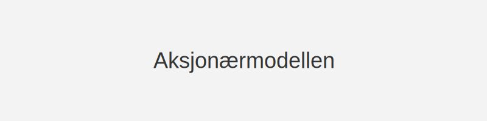
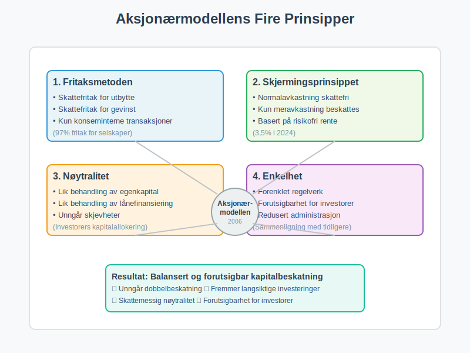
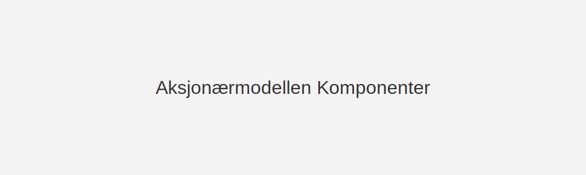
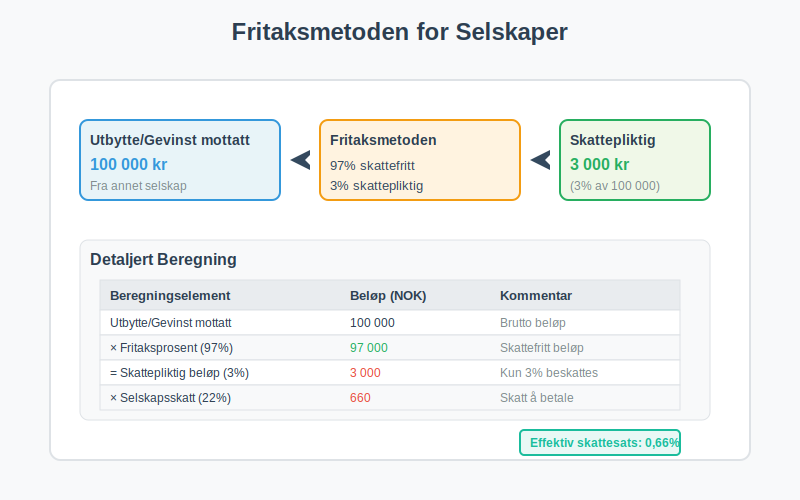
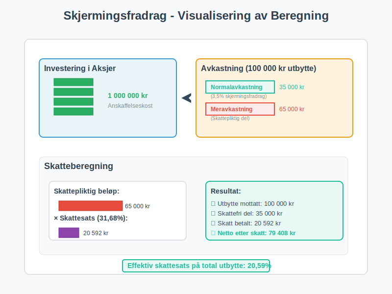
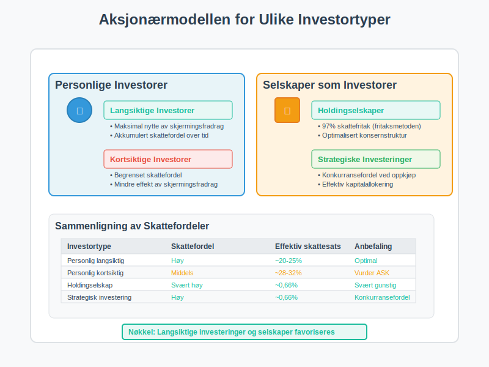
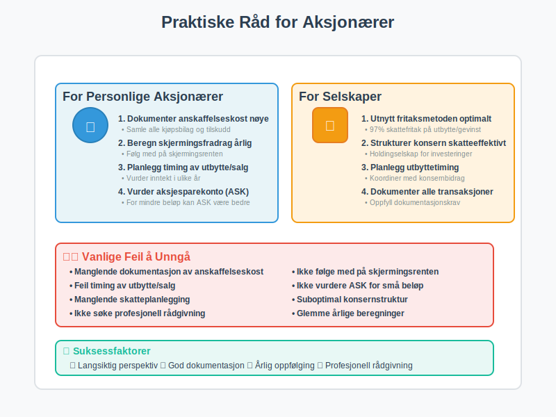

Aksjonærmodellen er den skattemessige modellen som regulerer beskatning av utbytte og gevinst for aksjonærer i norske aksjeselskap (AS). Modellen kombinerer prinsipper fra fritaksmetoden med skjermingsfradrag for å sikre nøytralitet mellom ulike investeringsformer og unngå dobbelbeskatning.

Historisk Bakgrunn og Formål
Aksjonærmodellen ble innført 1. januar 2006 som en del av den store skattereformen for å erstatte den tidligere regnskapsbaserte ordningen. Reformen var nødvendig for å:
- Eliminere dobbelbeskatning av selskapskapital
- Skape skattemessig nøytralitet mellom ulike investeringsformer
- Forenkle regelverket for aksjonærinvesteringer
- Sikre forutsigbarhet for langsiktige investeringer
Den gamle ordningen skapte skjevheter mellom egenkapital og fremmedkapital finansiering, noe som påvirket investeringsbeslutninger negativt.
Grunnleggende Prinsipper
Aksjonærmodellen bygger på fire hovedprinsipper:
- Fritaksmetoden: Skattefritak for utbytte og gevinst ved konserninterne transaksjoner. Se Hva er Fritaksmetoden?.
- Skjermingsprinsippet: Garanterer at normalavkastning (skjermingsfradrag) ikke beskattes. Les mer om Hva er Skjermingsfradrag?.
- Nøytralitet: Lik behandling av egenkapital- og lånefinansiering.
- Enkelhet: Redusert behov for kompliserte skatteregler og forutsigbarhet for aksjonærer.

Hovedkomponenter i Aksjonærmodellen
Skjermingsfradrag - Kjernen i Modellen
Skjermingsfradraget er den sentrale komponenten som sikrer at kun meravkastning beskattes. Dette fradraget beregnes som:
- Skjermingsgrunnlag × Skjermingsrente
- Skjermingsgrunnlaget er kostprisen på aksjene
- Skjermingsrenten fastsettes årlig av myndighetene
Komponenter i Oversikt
| Komponent | Beskrivelse | Satser 2024 |
|---|---|---|
| Skjermingsfradrag | Fradrag for risikofri rente på investert kapital | 3,5% årlig |
| Skjermingsrente | Årlig fastsatt risikofri rente (statsobligasjonsrente). Se Hva er Skjermingsrente?. | 3,5% (2024) |
| Fritaksmetoden | Skattefritak for utbytte og gevinst ved konserninterne transaksjoner | 97% fritak |
| Skattesats personlig | Effektiv skattesats for personlige aksjonærer etter skjerming | 31,68% |
| Selskapsskatt | Ordinær selskapsskatt | 22% |

Fritaksmetoden for Selskaper
For selskaper som eier aksjer i andre selskaper gjelder fritaksmetoden:
- 97% av utbytte er skattefritt
- 97% av gevinst ved salg av aksjer er skattefritt
- 3% beskattes som alminnelig inntekt (22% skatt)
- Gjelder kun for aksjer i selskaper med begrenset ansvar

Beregningseksempler
Eksempel 1: Utbyttebeskatning for Personlig Aksjonær
La oss se på en personlig aksjonær som mottar utbytte:
| Beregningselement | Beløp (NOK) | Kommentar |
|---|---|---|
| Inngangsverdi aksjer | 1 000 000 | Anskaffelseskost inkl. tilskudd |
| × Skjermingsrente (3,5 %) | 35 000 | Skjermingsrente × inngangsverdi |
| = Skjermingsfradrag | 35 000 | Skattefritt “normalavkastning” |
| Utbytte mottatt | 100 000 | Brutto utbytte fra selskap |
| - Skjermingsfradrag | (35 000) | Fradrag for normalavkastning |
| = Skattepliktig utbytte | 65 000 | Kun meravkastning beskattes |
| × Effektiv skattesats (31,68 %) | 20 592 | Skatt på meravkastning |
| Skatt å betale | 20 592 | Endelig skattekostnad |
Eksempel 2: Gevinst ved Salg av Aksjer
Ved salg av aksjer beregnes gevinst på samme måte:
| Beregningselement | Beløp (NOK) | Kommentar |
|---|---|---|
| Salgspris aksjer | 1 200 000 | Brutto salgspris |
| - Anskaffelseskost | (1 000 000) | Opprinnelig kostpris |
| = Gevinst før skjerming | 200 000 | Brutto gevinst |
| - Akkumulert skjermingsfradrag | (175 000) | 5 år × 35 000 (eksempel) |
| = Skattepliktig gevinst | 25 000 | Kun meravkastning beskattes |
| × Effektiv skattesats (31,68 %) | 7 920 | Skatt på meravkastning |
| Skatt å betale | 7 920 | Endelig skattekostnad |

Eksempel 3: Selskapsaksjonær med Fritaksmetoden
For selskaper som mottar utbytte gjelder fritaksmetoden:
| Beregningselement | Beløp (NOK) | Kommentar |
|---|---|---|
| Utbytte mottatt | 100 000 | Brutto utbytte |
| × Fritaksprosent (97%) | 97 000 | Skattefritt beløp |
| = Skattepliktig utbytte (3%) | 3 000 | Kun 3% beskattes |
| × Selskapsskatt (22%) | 660 | Skatt på skattepliktig del |
| Skatt å betale | 660 | Svært lav effektiv skattesats |
Praktisk Anvendelse og Skatteplanlegging
Timing av Utbytte og Salg
Aksjonærmodellen gir flere muligheter for skatteoptimalisering:
- Utbyttetiming: Planlegg utbytte i år med lavere andre inntekter
- Realisering av gevinst: Vurder timing av salg basert på akkumulert skjermingsfradrag
- Reinvestering: Bruk skjermingsfradrag til å bygge opp skattefri avkastning
Betydning for Ulike Investortyper
Personlige Investorer
- Langsiktige investorer drar størst nytte av akkumulert skjermingsfradrag
- Kortsiktige investorer får mindre skattefordel
- Porteføljeplanlegging blir viktigere for skatteoptimalisering
Selskaper som Investorer
- Holdingselskaper får store skattefordeler gjennom fritaksmetoden
- Konsernstruktur kan optimaliseres for skatteeffektivitet
- Strategiske investeringer får konkurransefordel

Praktiske Råd for Aksjonærer
For Personlige Aksjonærer
- Dokumenter anskaffelseskost nøye
- Beregn skjermingsfradrag årlig
- Planlegg utbytte- og salgstiming
- Vurder aksjesparekonto som alternativ
- Søk profesjonell rådgivning ved større investeringer
For Selskaper
- Utnytt fritaksmetoden optimalt
- Strukturer konsern for skatteeffektivitet
- Planlegg utbyttetiming
- Dokumenter alle transaksjoner
- Vurder konsernbidrag som alternativ

Relaterte Artikler
For dypere forståelse av aksjonærmodellen, les også:
Grunnleggende Konsepter
Skatteordninger
Regnskap og Rapportering
Konklusjon
Aksjonærmodellen representerer en balansert tilnærming til beskatning av kapitalinntekter. Ved å kombinere skjermingsfradrag med fritaksmetoden, sikrer modellen at kun meravkastning beskattes, samtidig som den opprettholder skatteproveny for det offentlige.
For investorer gir modellen forutsigbarhet og incentiver til langsiktige investeringer. For selskaper åpner fritaksmetoden for effektiv kapitalallokering og konsernstrukturer. For regnskapsførere krever modellen god forståelse av beregningsregler og dokumentasjonskrav.
I et internasjonalt perspektiv står Norge som et foregangsland med sin unike tilnærming til aksjonærbeskatning, selv om modellen fortsatt utvikles og tilpasses nye utfordringer i skattesystemet.
For en enda mer detaljert og omfattende gjennomgang av alle aspekter ved aksjonærmodellen, anbefaler vi vår Aksjonærmodellen - Komplett Guide til Norsk Aksjebeskatning.